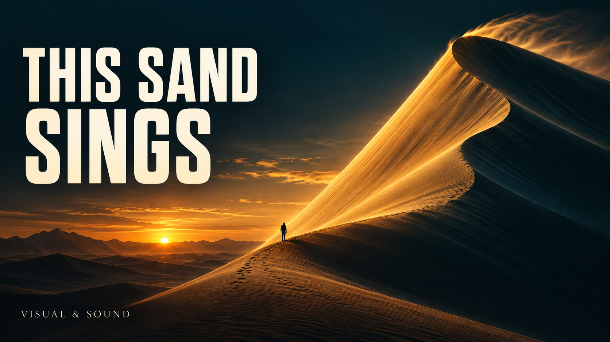
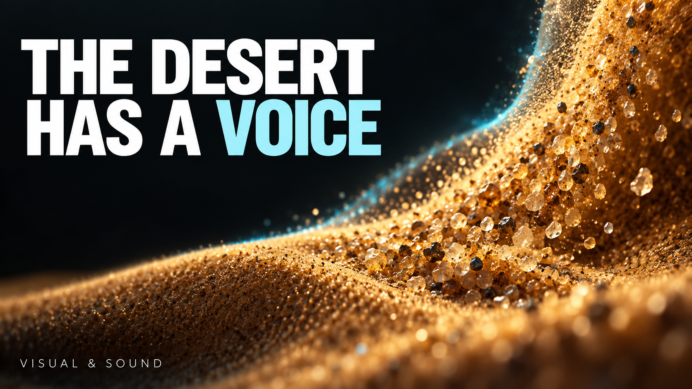

A · 壮观自然
暖金与深青，简洁的悬念标题。片中用安静的字标和较温暖的章节气质承接。
VISUAL & SOUND04
When a factory sings.
When a factory sings.
这一轮先选方向：两套封面与视觉样式、三段同文旁白、一个 Blender 抓手小样，以及修正后的实验槽动画。全部是候选，尚未替换原来的 8:57 成片。
同时看大图和 320px 小图。封面是概念设计，图内不再添加制作方式或研究引用说明。

暖金与深青，简洁的悬念标题。片中用安静的字标和较温暖的章节气质承接。

更近的材质、更清楚的字体，以及青色强调。与这一轮的实验槽和 3D 灯光相呼应。
同一份英文文案，同一模型与参数，响度统一处理。先比较自然度、清晰度和是否愿意连续听八分钟；没有更改你的个人声音配置。
A：George — Warm, Captivating Storyteller
B：Bella — Professional, Bright, Warm
C：Daniel — Steady Broadcaster
均来自当前账户可用的 ElevenLabs 预设声音。本轮仅为候选试听。
Listen to that low hum. It isn't wind, and it isn't an engine hidden behind the dunes. It's sand. On some slopes, an avalanche of dry grains produces a deep, sustained note. Researchers brought singing sand into a laboratory, and it still sang. That gave them a way to ask a better question: what turns countless tiny collisions into one clear sound? The answer takes us from moving grains to vibrating air, and eventually to a surprisingly useful idea: a soft bag of particles that can become a robot's grip.
18 秒动作小样 · 720p · 24fps。前侧剖面展示颗粒，软袋贴合、固定、提起、放回再松开。这段先看造型与动作，暂不绑定某个旁白。
这是用于讲解的定向动画，重点是形状和动作可读性；不是经过标定的颗粒物理仿真。说明留在审片页，不叠在视频画面上。
18 秒 · 1080p · 30fps。闸门与麦克风分离；传感器从底部单独引出；移动颗粒不再循环穿越同一画面，深色底层明确保持静止。
这段是运动与布局修订候选，尚未接入新旁白。波形是视觉示意，研究来源继续沿用上一版的 Dagois-Bohy 等人 2012 年论文。
可以直接在聊天里告诉我，也可以在这里记录后下载。选择仅保存在本机浏览器，不会自动发布或提交。